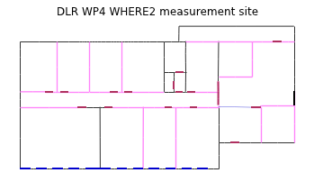

23. Example of a trajectory synthesis in DLR WHERE2 environment¶
<matplotlib.figure.Figure at 0x50d7f50>
This function has to be moved in simulem module. It is a temporary implementation. Signatures can be handled much more efficiently here. It run a full simulation and returns a list of channel impulse response.
23.1. loading the Layout¶
We have a list of static Anchor Nodes. Those values correspond to the actual anchor nodes coordinates of the WHERE2 project DLR measurement campaign.
Vizualization of the simulated scenario
[<matplotlib.lines.Line2D at 0x7f501d60ea10>]
In the following a trajectory for the receiver is defined.
linevect function allows to define a linear trajectory from ptt along direction vec.
Looking what is does
Warning : no furniture file loaded
(<matplotlib.figure.Figure at 0x7f501c0fcc90>,
<matplotlib.axes.AxesSubplot at 0x7f501d30b910>)
Choosing a UWB waveform for the simulation

running the simulation
Saving the data in pickle format
Reading the data from the above file
23.2. Aggregated CIR along a synthetic trajectory (line in the corridor)¶
(0.0, 150.0, 1.0, 69.0)

/usr/local/lib/python2.7/dist-packages/matplotlib/axes.py:4747: UserWarning: No labeled objects found. Use label='...' kwarg on individual plots.
warnings.warn("No labeled objects found. "
(<matplotlib.figure.Figure at 0x3730f90>,
array([[<matplotlib.axes.AxesSubplot object at 0x7f501d91dd50>]], dtype=object))

<matplotlib.text.Text at 0x7f50063d5350>
<matplotlib.figure.Figure at 0x7f501fa2f610>
<matplotlib.text.Text at 0x7f5006405b90>